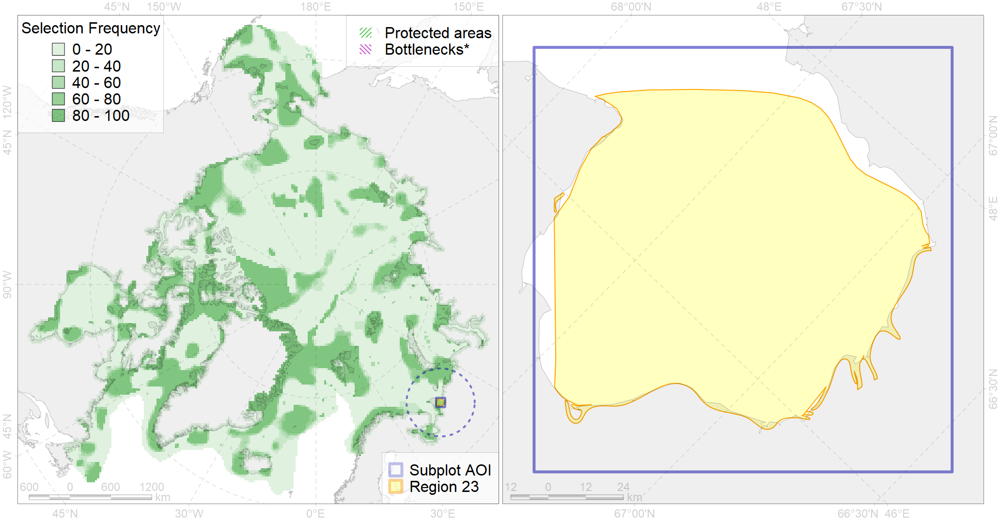

Region 23
Region 23
“ArcNet” scenario 33 achievement for region 23.
Use Accenter for advanced mode.

0
CFs inside of Region completely
5
CFs inside of Region at quarter
3
Complete-targets achievement by Region
6
Half-targets achievement by Region
| CF | Name | Target Achievement for Region | Proportion of Target Achievement in Region | Amount Proportion in Region |
|---|---|---|---|---|
| 7075 | I.1.3.3. Large shallow unstratified bays | 273.1% | 99.0% | 91.7% |
| 7015 | Chioshskaya Bay boreal enclave | 101.1% | 98.4% | 80.9% |
| 7245 | Pechora Sea kelp patches (13-14) | 96.7% | 53.2% | 50.0% |
| 3124 | polynya Mezen | 265.0% | 94.8% | 35.7% |
| 8025 | intertidal zone of the Barents Sea LME | 95.2% | 40.9% | 30.7% |
| 6061 | Common eider (Somateria mollissima mollissima) SE Barents and Kara Sea breeding&moulting grounds | 14.4% | 13.2% | 9.1% |
| 4020 | Feeding area of the White-sea vendace (Coregonus sardinella marisalbi) (F21) | 28.5% | 12.4% | 7.8% |
| 8032 | Salt marshes of the Barents Sea LME | 13.7% | 13.6% | 7.7% |
| 7064 | I.1.1.1. Coastal domain in the Barents Sea | 71.3% | 10.1% | 6.4% |
| 2041 | Ringed seal whelping areas in the Barents Sea | 18.3% | 7.8% | 5.0% |
| 4089 | Fish zoogeography, Arctic Region, Subarctic Transitional-Atlantic Province, Mesen’ – Pechora aquatory of the Barents District | 16.7% | 7.5% | 3.8% |
| 2003 | Bearded seal whelping areas in the Barents Sea | 13.9% | 6.0% | 3.8% |
| 4072 | Range of the Pechora herring (Clupea pallaii suworowi) (F 9) | 21.2% | 6.0% | 2.9% |
| 1010 | Atlantic Walrus Winter Distribution in Pechora and Kara region | 6.8% | 4.5% | 2.6% |
| 3026 | Marginal Ice Zone distribution in April in the Barents Sea LME | 17.1% | 4.0% | 2.3% |
| 4043 | Range of Nawaga (Eleginus nawaga) (F37) | 15.9% | 4.5% | 2.2% |
| 6043 | Stellers eider (Polysticta stelleri) Atlantic moulting&migration stopovers | 2.8% | 2.0% | 1.8% |
| 4014 | Feeding area of the Siberian whitefish (Coregonus pidschian) (F 18) | 6.2% | 3.9% | 1.7% |
| 4039 | Spawning areas of the Polar Cod (Boreogadus saida) in the Barents Sea (F 35) | 2.4% | 1.6% | 1.5% |
| 4018 | Feeding area of the Vendace, Least cisco (Coregonus sardinellа), Euro-Asian populations (F 20) | 5.1% | 2.7% | 1.4% |
| 4021 | Feeding area of the Inconnu (Stenodus leucichthys nelma), Euro-Asian populations (F 22) | 3.8% | 3.2% | 1.4% |
| 4094 | Subarctic fish complex of the Barents region | 16.5% | 3.0% | 1.1% |
| 4008 | Feeding / nursery area of the Arctic Cisco (Coregonus autumnalis), Eurasian populations (F 14) | 2.6% | 2.4% | 1.1% |
| 4052 | Range of the Fourhorn Sculpin (Myoxocephalus quadricornis) (F 45), American populations | 31.7% | 2.2% | 1.1% |
| 4030 | Feeding area of the Arctic charr (Salvelinus alpinus), anadromous populations (F28) | 2.4% | 2.1% | 1.1% |
| 5007 | Beluga of the Barents-Kara-Laptev Sea stock general distribution | 2.8% | 1.9% | 0.8% |
| 4054 | Range of the Shorthorn Sculpin (Myoxocephalus scorpius) (F 46), European populations | 21.0% | 1.5% | 0.7% |
| 4006 | Feeding/nursery area of the Pacific rainbow smelt (Osmerus dentex) (F12) | 3.4% | 1.3% | 0.7% |
| 2017 | Grey seal distribution range | 9.1% | 1.3% | 0.6% |
| 4058 | Range of the Arctic flounder (Liopsetta glacialis) (F48) | 8.6% | 1.1% | 0.6% |
| 4027 | Feeding/migration area of the Atlantic salmon (Salmo salar) American populations (F27) | 2.4% | 1.7% | 0.6% |
| 4057 | Range of the American Plaice (Hippoglossoides platessoides) (F 47), American populations | 14.5% | 1.3% | 0.5% |
| 4049 | Range of the Haddock (Melanogrammus aeglefinus) (F 42) | 6.8% | 1.1% | 0.5% |
| 3012 | Fast ice distribution in the Pechora Sea | 6.4% | 0.5% | 0.5% |
| 4045 | Feeding/migration area of the Pink Salmon (Oncorhynchus gorbuscha), native distribution (F23) | 3.1% | 0.5% | 0.2% |
| 4003 | Range of the Atlantic Capelin (Mallotus villosus) (F10) | 5.6% | 0.5% | 0.2% |
| 4017 | Feeding/ migration area of the Greenland Shark (Somniosus microcephalus) (F1) | 0.7% | 0.4% | 0.2% |
| 5112 | Arctic Cetaceans (beluga, bowhead, narwhal) winter habitats as predicterd by MIZ | 0.3% | 0.3% | 0.1% |
| 6028 | Glaucous gull (Larus hyperboreus hyperboreus) breeding grounds | 0.4% | 0.1% | 0.1% |
| 4041 | Range of the Polar Cod (Boreogadus saida) (F35) | 0.5% | 0.2% | 0.1% |
| 9010 | polar bear of the KS (Kara Sea) subpopulation distribution | 0.1% | 0.1% | 0.0% |
| 4046 | Range of the Thorny Skate (Amblyraja radiata) (F 3) | 0.3% | 0.0% | 0.0% |
| 7066 | I.1.1.3. Shelf plains | 0.3% | 0.0% | 0.0% |
| 7067 | I.1.1.4. Shelf troughs | 0.1% | 0.0% | 0.0% |
| 1009 | Atlantic Walrus Summer Distribution in Pechora and Kara region | 0.0% | 0.0% | 0.0% |